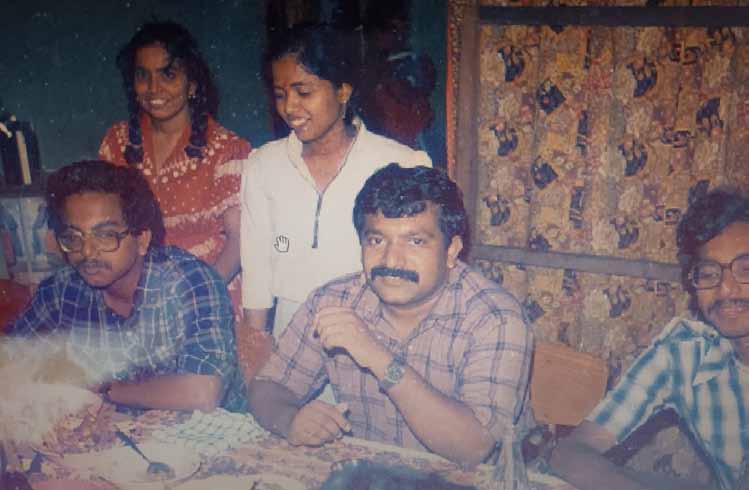
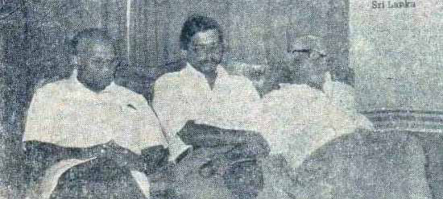
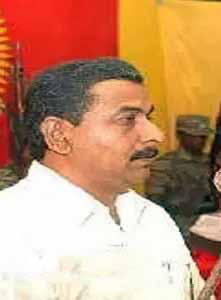
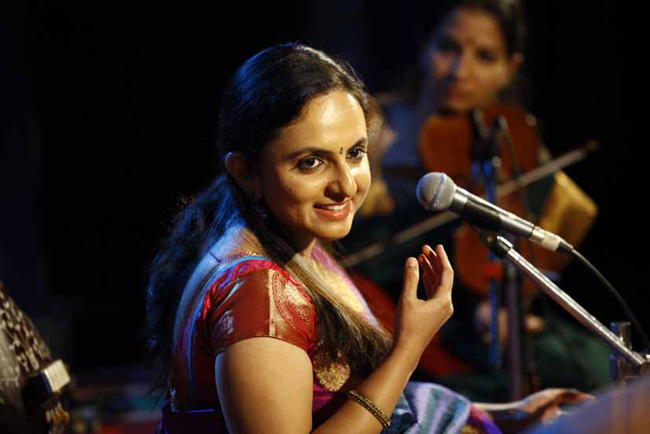
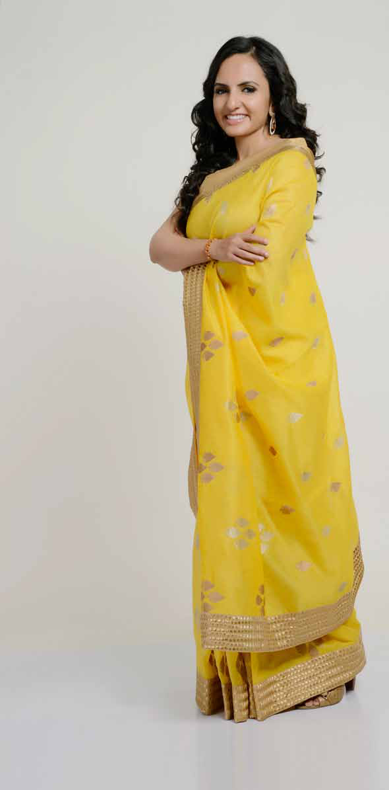
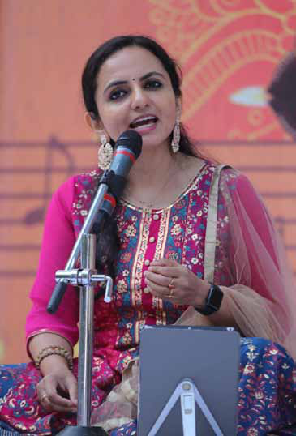
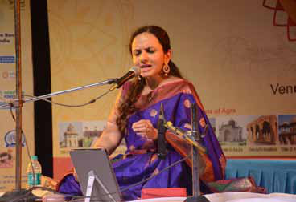

Anton Master Speaks:
Anton Master Speaks:
Jaffna Monitor hellojaffnamonitor@gmail.com 8 Anton Master Speaks: dialogue Former Military Office Chief of LTTE Shares His Untold Story with 'Jaffna Monitor' BY: Kaniyan Pungundran fzpad; G+q;Fd;wd; As a prominent member of the LTTE who oversaw the organization's Military Office (MO), what prompted your decision to leave the LTTE? Could you share the reasons behind this significant move? You need to understand one fundamental aspect: we initiated the liberation struggle in response to the Sri Lankan Tamil people's treatment as second-class citizens by Sinhala chauvinist governments. The LTTE was not established, nor did its fighters sacrifice their lives to combat the Indian government or its army. I firmly believed that antagonizing India was not a viable strategy, and I also understood that Sri Lankan Tamils could not achieve their goals by making India an enemy. Unfortunately, this understanding was something Prabhakaran lacked. When Prabhakaran himself lacked this clarity, it was unrealistic to expect his close aides, who always concurred with him and acted as 'yes-men,' to possess it. Opposing India would have left the LTTE without a safe haven, so I Part- 5 KT Sivakumar, also known as Anton Master, is a prominent early member of the Liberation Tigers of Tamil Eelam (LTTE) and a close associate of leader Prabhakaran. He significantly contributed to the LTTE as a member of its Central Committee and as the founder and head of the Military Office (MO), enhancing the group's military effectiveness. Known for his reticence in media interactions, Sivakumar prefers 'dialogues' over interviews. The following is a part of a series of dialogues I had with him, providing rare insights, which will be featured in the forthcoming issues.

Jaffna Monitor hellojaffnamonitor@gmail.com 9 Anton Master (L) with Prabhakaran firmly believed that we should not antagonize India. During clashes between the LTTE and the Indian Army in Jaffna, we even transported injured LTTE fighters to India for treatment with the blessing of the Indian government. This demonstrated the Indian government's remarkable tolerance at the time. While fighting was going on between LTTE and Indian forces in Sri Lanka, I met actor Sivaji Ganesan, who led the political party 'Thamizhaga Munnetra Munnani'. I asked him to release a press statement in favor of the LTTE. He responded with a sad smile, questioning how he could support us while we were killing our soldiers. Nevertheless, he agreed to release the statement as I had requested. I was not alone in this view; even Kittu shared my belief that we should not confront India. At that time, after sustaining injuries from a grenade attack in Jaffna, Kittu was in India, managing the LTTE's propaganda activities. I also spoke to Bala Anna ( Anton Balasingam), who had been staying in Bangalore on a low profile and planning to escape to London. He also accepted my position. It was against this backdrop that in 1988, at the suggestion of the Indian government, the LTTE engaged in negotiations with India's foreign intelligence agency, the Research and Analysis Wing (RAW). Kittu and I represented the LTTE in these discussions in Chennai. The Indian government consented to several of our demands, including establishing an interim government and inaugurating a police academy in the North and East. In my opinion, This was a once-in-a-lifetime opportunity for Tamils and LTTE to steer towards a Federal state or separate state with more lifesaving and fewer casualties. All we would have needed was patience.

Jaffna Monitor hellojaffnamonitor@gmail.com 10 Due to the history of Sri Lanka, psychologically, India is perceived as a threat and an adversary by Sinhalese regimes. No Sinhalese leaders were content or in agreement with the Indo-Sri Lanka Accord and India's direct involvement; it was akin to a forced marriage. This situation could have been a significant trump card for the Tamils following the implementation of the 13th Amendment. However, Prabhakaran muddled the plan over a single issue – the participation of a Sri Lankan government representative in the interim government. This greatly frustrated me. I sent a message to Prabhakaran questioning why he opposed the Interim Government over a minor issue and the political purpose of continuing the war with India etc. I mentioned that if there is no reasonable answer, I will not contribute any more to the LTTE. His response was dismissive, accusing me of displaying my 'true Vellalar caste behavior' and suggesting that if I feared confronting the Indian Army, I should leave the organization. I then departed from the LTTE with a heavy heart, realizing that Prabhakaran's foolishness and utter stubbornness would lead to unimaginable tragedies for Sri Lankan Tamils. At that point, I completely disengaged myself from the armed struggle. I must clarify that I never accused Prabhakaran of being casteist or discriminating based on caste. I did not perceive him as holding any animosity towards the Vellala caste. I believe that my letter, which challenged his decisions, provoked his anger, resulting in his harsh response. The Prabhakaran I knew did not show preferences or aversions based on religion. Although a Saivite, he treated individuals of other faiths without discrimination. I was profoundly shocked when the LTTE expelled Muslims from Jaffna in 1990, as this action contradicted the Prabhakaran I knew, who transcended caste and religious prejudices. In this respect, I can affirm that he possessed the qualities of a true gentleman. During the period between the first and second Thimphu peace talks in 1985, an informal discussion took place, attended by representatives of various militant groups, including EPRLF's Padmanabha, TELO's Sri From left to right - Appapillai Amirthalingam, then Leader of the TULF; Anton Master, former Military Office Chief of the LTTE; and Murugesu Sivasithamparam, Member of Parliament from TULF.

Jaffna Monitor hellojaffnamonitor@gmail.com 11 Sabaratnam, and EROS's Ratnasabapathi. Prabhakaran, Balasingam, Thilakar, and I were present to represent the LTTE. At this meeting, while everyone was sitting at the round table, Ratnasabapathi walked from his chair, held Prabhakaran's both shoulders, and said, 'He is a Karaiyan,' alluding to his Karaiyar caste. Prabhakaran, however, showed no signs of resentment or anger; he merely smiled and continued engaging in the conversation. This incident reinforced my belief that caste and religious prejudices did not sway him. Prominent LTTE figures such as Kapil Amman and Mathavan Master, who ascended to key roles, were initially under your guidance in the Military Office (MO). Could you elaborate on your methods for identifying and cultivating talent within the organization? I am trying to remember who Kapil Amman was and in which division he worked. Mathavan was a gentle, joyful, and dedicated man. In MO, everyone was given equal opportunity and treated fairly. I did not act as if I were in command. People working at MO were hardworking and dedicated. We held board meetings to discuss and approve matters. That was not a common practice within the LTTE. Presently, certain ultra-Tamil nationalist parties appear to mirror Prabhakaran's ideology and methods. How do you perceive the perpetuation of his legacy in the current political climate? Do you believe this approach benefits the Sri Lankan Tamil community? History serves as a classroom where the wise learn not to repeat mistakes. We all should draw lessons from the errors of Prabhakaran, who was undoubtedly a real and dedicated fighter. It is unwise to repeat the mistakes he and the LTTE made. There is no easy, straight path to freedom, whether the chosen vehicle is democracy or armed struggle. There will be steps to cross and steps to sit on along the way. Beggars have no choice; no one heeds the voice of beggars. The way to success is to gather strength, power, and resources, increase self-sufficiency in every way, and consolidate and reorganize at each step before moving on to the next step. The most destructive and counterproductive action occurs when those who believe in armed struggle interfere with those who have chosen democratic methods to assert their rights. Tamils must engage with the Sinhalese to foster mutual understanding between the communities. Sincere and continuous dialogue between these groups can significantly hasten the journey toward a solution. To be continued... Kapil amman Mathavan Master

Jaffna Monitor hellojaffnamonitor@gmail.com 12 I n the Jaffna Monitor's new series aimed at inspiring the youth, we commence with an interview featuring Deepika Varatharajan, a distinguished singer from India. Deepika began her musical journey at the age of three, guided by her parents, Geetha and Varatharajan. Her talents were honed under the mentorship of Pandit Prasad Khaparde and Sudha Ragunathan. Known for her versatility, Deepika has contributed to various film soundtracks, collaborating with renowned directors such as Ilayaraja and A.R. Rahman. Her melodious voice is featured in films like 'Baahubali,' 'Dil Se,' and others. She has also showcased her acting talent in the television serial 'Kaiyalavu Manasu,' Deepika Varatharajan: Melody and Mastery BY: Our Reporter Interview

Jaffna Monitor hellojaffnamonitor@gmail.com 13 directed by the legendary K Balachander. This interview marks the start of a series that highlights the stories of professionals designed to motivate our youth. We explore Deepika Varatharajan's career, providing insights into her musical journey. We plan to publish this series of interviews monthly. How were you introduced to the world of music? My introduction to the musical world began at home, thanks to my mother, Geetha Varatharajan, a trained Carnatic Music singer who has worked with the renowned music composer Ilayaraja. Her dedication to Carnatic Music was a constant presence in our home. Similarly, my father, Varadarajan, is a fervent music enthusiast, and his side of the family has always had a deep appreciation for music. From my early childhood, music has been an ever-present element in our household. I grew up watching my mother practice Carnatic Music daily, which naturally piqued my interest in learning it. It felt almost instinctive to start learning the basics of Carnatic Music from my mother right at home. As I progressed in my musical training, I underwent formal instruction under the guidance of Vittal Ramamurthy, followed by lessons from O.S. Thyagarajan, Vijayaraghavan, and Vairamangalam Lakshmi Narayanan. Upon reaching an advanced stage in Carnatic music, I had the privilege of becoming a disciple of Sudha Ragunathan. I spent many years under her tutelage, which greatly deepened my understanding and honed my skills in Carnatic Music. For the past 10 years, I have been learning Hindustani Classical music from Sri Prasad Khaparde. With the advancement of technology, is the traditional Guru-shishya method still necessary for learning Indian Classical music from a guru, or can newcomers learn it through different means? I believe there's no real substitute for learning Carnatic Music from a guru in person. Advanced technologies can certainly offer support, but they cannot take the place of a guru's role.

Jaffna Monitor hellojaffnamonitor@gmail.com 14 Originating from the Vedas, Indian Classical Music has been passed down through oral tradition for centuries. These new technologies are best used as supplemental aids. For example, over the past 10 years, I've been learning Hindustani music from Prasad Khaparde, a senior disciple of Ustad Rashid Khan, who is based in Nashik, Maharashtra. I make it a point to attend his classes in person as much as I can, but when that's not possible, I continue my lessons through Skype. This technology serves as a helpful aid, but I firmly believe that I could not have comprehensively learned Hindustani music merely by watching videos of my guru on YouTube. You are well-versed in both Carnatic and Hindustani music. Could you discuss the similarities and differences between the two styles? And do you have a preference for one over the other? It's difficult for me to choose a favourite between the two, as I deeply love both forms of classical music. In my view, the fundamentals of both Carnatic and Hindustani music are quite similar. They share the same notes, and there are common ragas in both traditions. Moreover, each has adopted a few ragas from the other. However, despite these similarities, there are distinct differences as well. Carnatic music performances are primarily composition- based, and we do a lot of improvisation. In a Hindustani classical music concert, for example, we say we are performing Raag Yaman, wherein we include two or three bandishes (short composition) and focus fully on improvisation. Each style has unique characteristics and beauty, making them equally appealing to me. Managing language barriers must be challenging, especially since you can't speak all the languages associated with Carnatic and Hindustani music. How do you overcome this challenge? Carnatic music predominantly features compositions in Telugu, but it also encompasses songs in Tamil, Kannada, and Sanskrit. Conversely, Hindustani music is deeply rooted in the Braj language, a dialect of Hindi. This genre not only includes region-specific songs, like those in Marathi or Bengali, but its compositions are also extensively influenced by Urdu. Furthermore, I have learned to speak Hindi to deepen my understanding and enhance my performance of Hindustani music. When it comes to singing regional languages like, say, Marathi or Bengali, which have their own unique accents, I seek help from native

Jaffna Monitor hellojaffnamonitor@gmail.com 15 speakers. Fortunately, I learned Sanskrit from my childhood and even completed my bachelor's degree in it. My proficiency in reading and writing Sanskrit is quite high. Tamil is my mother tongue, and I'm also fluent in English. My Sanskrit knowledge has been immensely helpful. When I need to learn a song in a language other than Tamil, I prefer to write it down in the Devanagari script, which is used in Sanskrit. This approach has greatly aided my pronunciation, ensuring it never goes astray. Additionally, I've learned to write and speak Hindi. When it comes to singing in Bengali, which has its own unique nuances, I seek help from native speakers. Having sung for nearly all the major music composers in the South Indian film industry, do you have a favourite song that you've performed? Yes, over the years, I have had the privilege of singing for almost all the renowned music composers in the South Indian film industry, starting from my childhood. My favourite song is 'Irul Konda Vaanil' from the movie 'Baahubali.' What advice would you offer to a young person from Jaffna aspiring to become a great musician like yourself? The first step is to find a good teacher, regardless of the type of music you wish to learn. Engaging in continuous practice is crucial; there are no shortcuts in music, and it's certainly not a cakewalk. One must practice diligently and with unwavering determination. Also, immense patience is necessary. Learning music is fundamentally different from acquiring other degrees. In music, there is no definitive endpoint – it offers a lifetime of learning opportunities. To understand all the nuances of a single raga can take more than a lifetime. So, to all newcomers, my advice is to remain patient and keep practising. Have you visited Sri Lanka and Jaffna? Yes, I had the opportunity to visit this beautiful country once in 2010. I came along with the renowned dancer Alarmel Valli. We spent only two days in Jaffna, but even in that short time, I was mesmerized by the rich culture and beauty of the place. And, of course, the warmth and hospitality of the people of Jaffna left a lasting impression on me. With tourism flourishing in Sri Lanka and an increasing number of tourists from India visiting, do you have plans to visit Sri Lanka again anytime soon? I would love to revisit. I have been longing to return to Sri Lanka, a country of immense beauty. Many of my close friends have recently travelled there, and their experiences have further fueled my desire to visit. I hope I can make the trip soon.
